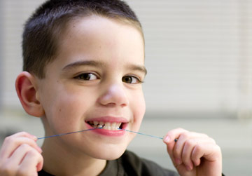

Pediatric / Children's Dentistry in El Paso
Our dentists take special care when providing dentistry for your little ones. Your child is precious, so we take the time to get to know your child, keeping them comfortable, while educating you about the best methods of healthy dental habits.
We do everything we can to prevent tooth decay, the number one cause of tooth loss in children, like providing sealants and fluoride treatments for added protection. For extensive cases, we may be able to provide sedation.
Please ask our Picasso Smiles dentists for more information.